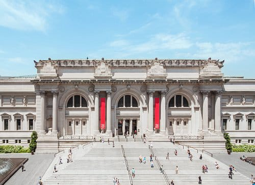
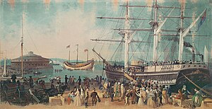
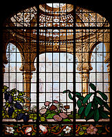

New York City
New York City
lokasi New York City Of Museum
Museum of the City of New York atau yang lebih dikenal oleh masyarakat Indonesia dengan Museum Kota New York, merupakan sebuah galeri seni dan museum sejarah yang didirikan pada tahun 1923 untuk menjelaskan sejarah dan masyarakat Kota New York, Amerika Serikat. Pada tahun 1982, museum ini mnerima penghargaan medali emas oleh The Hundred Year Association of New York untuk "kontribusinya terhadap Kota New York.
Museum ini terletak pada bagian utara Museum Mile di Fifth Avenue, Manhattan, di antara 103rd and 104th Streets, menghadap Central Park. Bangunan museum ini dirancang oleh Joseph J. Freedlander dengan menggunakan gaya Neo-Georgian. Pembangunannya dimulai pada tahun 1928 dan selesai pada tahun 1930.
Museum ini merupakan organisasi swasta nirlaba yang menerima donasi dari pemerintah sebagai anggota dari Kelomppok Institusi Budaya Kota New York
Koleksi
Koleksi museum termasuk diantaranya lukisan, gambar, cetakan, foto yang menampilkan Kota New York dan penduduknya, kostum yang mereka gunakan, benda dekorasi dan furnitur, mainan, buku langka dan manuskrip, koleksi benda-benda militer, polisi, dan pemadam kebakaran, dan koleksi mengenai teater (mendokumentasikan mengenai masa keemasan teater Broadway).
Salah satu benda langka yang terdapat pada koleksi museum adalah kursi yang pernah dimiliki oleh Sarah Rapelje, anak dari Joris Jansen Rapelje, yang berasal dari Nieuw Amsterdam, dan merupakan anak pertama yang lahir di New York yang memiliki orang tua Eropa. Kursi ini disumbangkan oleh keturunannya yang bernama keluarga Brinckerhoff.
Museum ini terkenal untuk koleksi fotografinya yang lengkap, yang merupakan hasil karya Stanley Kubrick, Jacob Riis dan Berenice Abbott, yang merekam masa depresi Amerika Serikat. Museum ini juga merupakan lokasi penyimpanan untuk beberapa furnitur rumah milik John D. Rockefeller, yang disumbangkan oleh anaknya John D. Rockefeller, Jr
”Teluk dan Pelabuhan New York” oleh Samuel Waugh (1814–1885), menggambarkan kedatangan kapal Jung di pelabuhan New York pada bulan Juli 1847 (cat air di kanvas, 1853–1855, Museum of the City of New York).
Jendela rumah Henry Gurdon Marquand (sekitar 1883–1884), dirancang oleh Richard Morris Hunt (1827–1895) dan dibuat oleh Eugène Stanislas Oudinot (1827–1889)
Perluasan museum
Direktur museum yang baru, Susan Henshaw Jones, mengeluarkan rencana untuk memperluas museum ini. Pembangunan untuk perluasan, termasuk diantaranya untuk ruangan galeri baru, dilakukan pada tanggal 2 Agustus 2006. dan selesai pada bulan Februari 2008 dengan pengguntingan pita pada tahun yang sama.